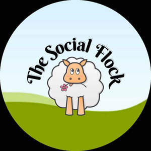

Trade Mark Journal No.2026/007 13 February 2026
UK00004320069 6 January 2026 (9,16,18,21,25,28,35,41,42,45)

- Class 9
- Downloadable digital content; downloadable templates, planners, guides, workbooks and educational materials; downloadable social media content; digital resources relating to social media marketing, digital marketing, business growth and online community membership.
- Class 16
- Printed matter; printed planners, notebooks, workbooks, stationery, brochures, flyers; printed educational materials relating to social media marketing, digital marketing, business growth and online training.
- Class 18
- Tote bags; reusable shopping bags; bags for carrying goods; canvas bags; drawstring bags; rucksacks; gym bags; pouches; organiser bags; laptop bags; document bags.
- Class 21
- Household and kitchen utensils and containers; mugs, cups, drink bottles; drinkware; homeware; promotional household items.
- Class 25
- Clothing; apparel; t-shirts; hoodies; sweatshirts; hats; caps; headwear; clothing accessories; promotional clothing.
- Class 28
- Toys; plush toys; soft toys; cuddly toys; promotional toy figures; collectible soft toys.
- Class 35
- Advertising; marketing services; digital marketing services; social media management and consultancy; business management and consultancy services; business mentoring; promotion of goods and services through social media and online platforms; management of membership clubs; business networking services.
- Class 41
- Education; providing of training; conducting webinars, workshops, seminars and courses; online training services; provision of educational content via digital platforms; membership-based education and training services; business and social media education; online community education services.
- Class 42
- Providing online platforms and software for access to digital content, training materials and membership-based services; hosting online portals; design and development of digital marketing strategies.
- Class 45
- Online social networking services; providing online communities for business owners and professionals; membership-based community services; social introduction and networking services.
Social Media Executive Ltd